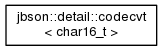
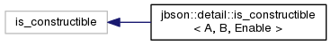
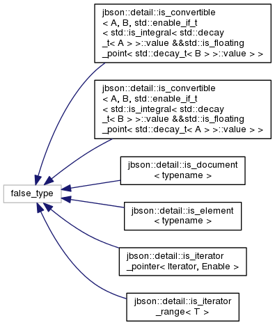
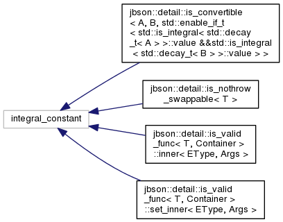
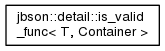
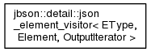
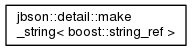

jbson
C++11/1y BSON library
View on GitHub
Main Page
Related Pages
Namespaces
Classes
Files
Class List
Class Hierarchy
Class Members
Class Hierarchy
Go to the textual class hierarchy







Copyright © 2014
Christian Manning
. Generated by
1.8.6

 1.8.6
1.8.6